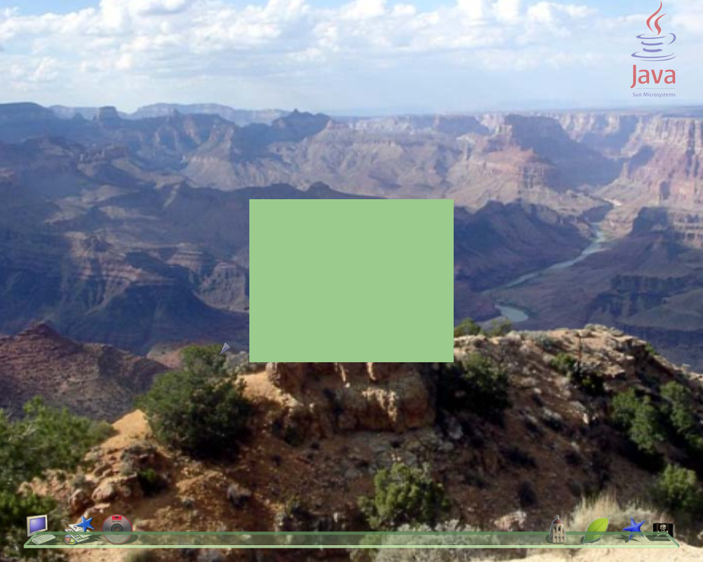

Dieses Tutorial basiert auf dem, das von Hideya Kawahara geschrieben wurde.
| Ziel: | Demonstration der Basisschritte, um eine 3D Anwendung im lg3d Framework zu erstellen |
|---|---|
| Anforderungen: | Um dieses Tutorial nutzen zu können, benötigst du eine funktionieerende lg3d-Installtion (Die stable Version ist zu Beginn die Beste - kann aber eine veraltete API habe (Anmerk. des Übersetzers)). Dies kann auf der lg3d-core Website gefunden werden. Folge dem "Getting started with Project Looking Glass" Link, wenn du Installationsanweisungen suchst. Es ist nicht notwendig die lg3d-session-Version auszuführen. |
| Zusätzlich benötigst du das Java 1.5/Java 5 SDK. Dieses ist auf der Sun Java Homepage erhältlich. | |
| Schritte : | |
| Schritt 1: | Erstellen eines root Containers |
| Als Erstes müssen wir einen root Container für diese 3D-Anwendung erstellen. Die Frame3D Klasse dient diesem Zweck. Wir können Frame3D erweitern(beerben), oder einfach eine Instanz erstellen und zu ihr die Komponenten hinzufügen. In diesem Beispiel nehmen wir den zweiten Ansatz. | |
Frame3D frame3d = new Frame3D(); |
|
| Schritt 2: | Erschaffen einer Box, die in den Container gesetzt werden kann |
| Also, versuchen wir jetzt eine Kiste der Größe 5cm x 4cm x 3cm in das Zentrum dieser Anwendung zu setzen.
Vordefinierte Formen, die unter
org.jdekstop.lg3d.utils.shape gefunden werden können, sind für diesen Zweck handlich. Nebenbei, in welcher Farbe willst du sie eigentlich zeichnen? Probieren wir 'mal ein blasses Grün in diesem Beispiel aus. Also müssen wir ein appearance-Objekt erstellen um die Farbe der Box bearbeiten zu können. Die API bietet auch eine praktische Klasse um Farben anzugeben an. Diese ist SimpleAppearance. Zusätzlich kann die Farbe des Objekts auch auf detailliertere Weise beschrieben werden, inklusive den Grad des Leuchtens und die Leuchtfarbe, der Durchsichtigkeit und der daraufgelegten Texturen. Du kannst mehr darüber herausfinden, indem du dir die API Dokumentation für Appearance, Material und Texture anschaust. |
|
SimpleAppearance app = new SimpleAppearance(0.6f, 0.8f, 0.6f); |
|
| Nun, da wir ein Standardaussehen haben, können wir die 5cm x 4cm x 3cm große Kiste erschaffen. | |
Box box = new Box(0.05f, 0.04f, 0.03f, Primitive.GENERATE_NORMALS | Primitive.GEOMETRY_NOT_SHARED, app); |
|
| Die Projekt Looking Glass 3D APIs basieren auf Java 3D. In Java 3D wird standardmäßig dase metrische System verwendet, wobei eine (1) Einheit einm Meter entspricht.
Und bei korrekter Konfiguration ergibt das Zeichnen eines Objekts der Größe 0.02 ein Objektauf dem Bildschirm, das etwa 2cm groß ist. Beachte aber, dass die Standardkonfiguration für lg3d für eine perspektivische Ansicht erstellt wurde, d.h. die reale Größe eines Objekts hängt von dessen Entfernung zum Betrachter ab. Standardmäßig wird der 3D Szenenmanager von lg3d das Objekt an eine vernünftige Position setzen, wo die reale Größe der beabsichtigten nahekommt. Standardmäßig teilen alle Primitven mit den selben Parametern auch ihre Geometrie (z.B. kannst du 50 Kugeln in deiner Szene haben, aber die Geometrie wird nur einmal gespeichert). Deshalb betrifft eine Änderung an einer Primitven dann alle geteilten Knoten. Eine andere Nebenwirkung hiervon ist, dass die Fähigkeiten (?) der Geometrie geteilt werden, und dass sie, sobald einer der geteilten Knoten aktiv ist, nicht gesetzt werden können. Um also mehrere Kopien unserer Anwendung gleichzeitig laufen lassen zu können, brauchen wir dasPrimitive.GEOMETRY_NOT_SHARED Flag. Da dieser Konstruktur die Standardwerte überschreibt, müssen wir auch das Primitive.GENERATE_NORMALS Flag, sodass die Frabe ordentlich angezeigt wird. | |
| Schritt 3: | Einfügen der Kiste in den Container |
| Um die Box auf dem Bildschirem anzeigen zu können, müssen wir die Box zum Toplevel Container hinzufügen.
Die Kiste kann direkt zu dem Frame3D hinzugefüt werden, nur ein Component3D
kann zu Frame3Ds hinzugefügt werden (diese Funktionalität wird von
Container3D geerbt).
Component3D ist die Basiskomponente aller lg3d Komponenten. Eine Komponente kann mehrere
Shape3D Objekte um seine Form zu definieren (Anmerkung: Box erbt von Shape3D),
haben und ein Frame3D kann mehrere Component3Ds verwalten(inklusive eingebetteter Container3Ds). Also müssen wir ein Component3D erstellen. |
|
Component3D comp = new Component3D(); |
|
| Dann fügen wir die Box zu dem Component3D hinzu. | |
comp.addChild(box); |
|
| Jetzt kann das Component3D zum root Container hinzugefügt werden. | |
frame3d.addChild(comp); |
|
| Schritt 4: | Initialisieren des Containers |
| Jetzt, wo die Box zum Frame hinzugefügt wurde, muss der Container noch initialisiert werden, um Wechselwirkung
mit dem Benutzer zu ermöglichen und die Kiste sichtbar zu machen. Als Erstes muss ein Call durchgeführt werden um die Fähigkeiten des Frame3Ds zu initialisieren. Diese Funktion stellt sicher, dass alle Objekte im Frame auch auswählbar sind. Wenn du feststellst, dass dein Cursor nicht über die Spitze deines Objektes hinausgeht, dann stelle sicher, dass du diese Funktion aufgerufen hast. (nachdem du die Component3Ds zum Frame hinzugefügt hast). |
|
frame3d.setCapabilities(); |
|
| Um den SceneManager zu unterstützen (zumindest den Standard-SzenenManager - GlassySceneManager) ist es nützlich eine Größenangabe für das Frame3D zu setzen. Diese wird vom Szenenmanager genutzt, um die 3D Anwendungen im 3D Raum, den er verwaltet anzuordnen | |
frame3d.setSize(0.05f, 0.04f, 0.03f); |
|
| Um das Frame sichtbar zu machen, sind zwei Schritte notwendig. Zuerst muss das Frame zum Scenegraph hinzugefügt werden. Dies erledigt der setActive() Aufruf. Präziser ausedrückt, beginnt der Aufruf die Interaktion mit dem 3D SzenenManager und der Manager kümmert sich um die Details der Art und Weise, auf die die Anwendung präsentiert wird (z.B. Ort, Größe, etc.). |
|
frame3d.setActive(true); |
|
| Zweitens muss das Frame, obwohl es bereits aktiv ist, noch sichtbar gemacht werden. Merke dir, dass setVisible() im Vergleich zu dem setActive() Aufruf ein ziemliches Leichtgewicht ist, deshalb sollte auch setVisible() verwendet werden, um ein Objekt kurzfristig zu verbergen. | |
frame3d.setVisible(true); |
|
| Schritt 5: | Kompilieren des Codes |
| Wir sind jetzt mit dem Schreiben des Codes fertig. Die komplette Version enthält die notwendigen import Statements,
und verschidene Konstruktor- und Mainmethoden. Lade dir Tutorial1.java herunter. Jetzt müssen wir noch die Quelldatei kompilieren. Das Tutorial benötigt die lg3d core Bibliothek und Java 5 zum kompilieren. Die Kern-Bibliothek kann im lib Verzeichnis der lg3d-Distribution gefunden werden(ersetze $LG3DHOME mit dem Pfad zu der lg3d Distribution). |
|
|
|
| Schritt 6: | Aufsetzen einer Testumgebung |
| Um die Anwendung ausführen zu können, muss die lg3d-Umgebung korrekt eingerichtet werden, um sicherzustellen, dass Display und andere Konfigurationsparameter gesetzt sind. Um diesen Prozess zu erleichtern, gibt es ein Shellskript. Wenn es einmal richtig konfiguriert ist, kannst du das Tutorial einfach ausführen. Downloade runtutorial und folge diesen Schritten: | |
|
|
| Schritt 7: | Ausführen unserer Anwendung |
| Um das Tutorial auszuführen, führe einfach das runtutorial Skript mit dem Namen der Klassendatei (ohne die Dateinamenserweiterung) aus | |
./runtutorial Tutorial1 |
|
| Der lg3d Desktop sollte mit einer blassgrünen Box im Zentrum dargestellt werden (wie es unten zu sehen ist). Faktisch kann nur ein blassgrünes Rechteck gesehemn werden - im nächsten Tutorial wird die Box dann rotiert werden, sodass sie auch wie eine Box aussieht. | |
|  | |